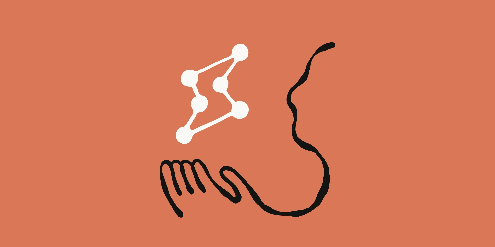
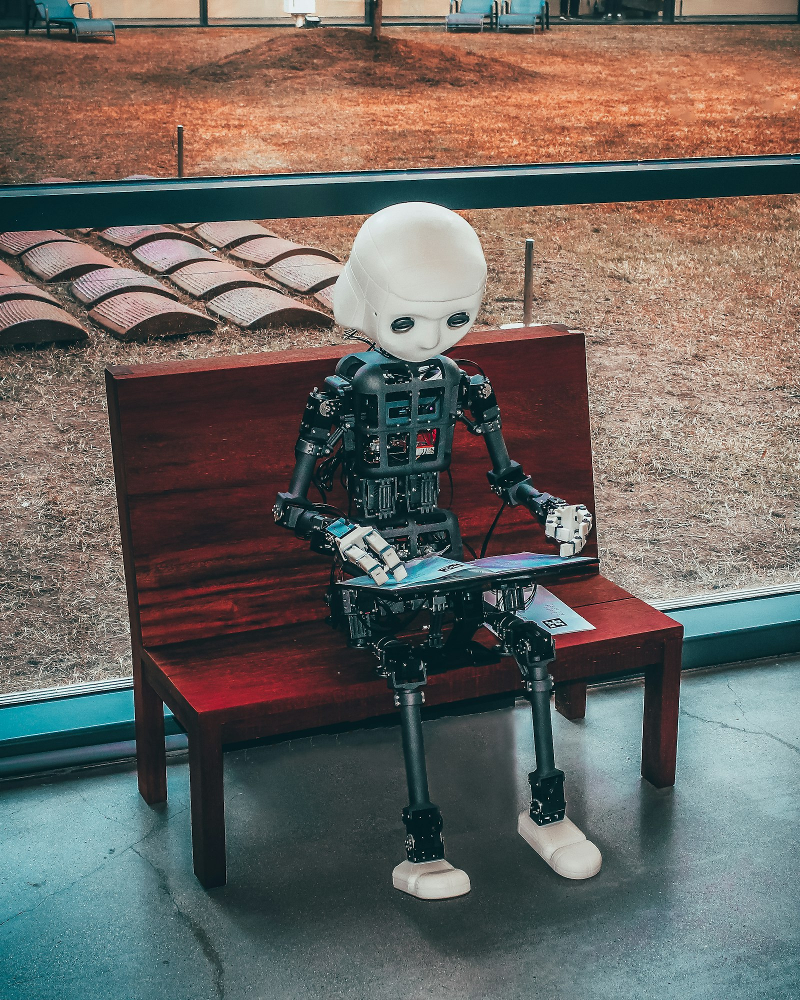

S0 — Hook

Meu computador começou a trabalhar sem mim e isso faz diferença:
Abri o notebook, dei um comando e fui tomar café; o contexto executava atenção e precisão sem ser percebido.
S1 — Content

A espera fazia parte do conteúdo.
Abri o notebook de manhã, dei um comando e fui tomar café, reforçando atenção sustentada e tolerância ao 'ainda não'.
S2 — Content
Quando voltei, a tela estava viva.

A história continuava fora do comando: o agente recriava cenas, preenchia lacunas com imaginação e pensamento preciso.
S3 — Content
Não era um vídeo. Não era uma demo ensaiada.
Era o Playwright controlando a máquina enquanto eu tomava café com leite. Paciência e precisão exercitados pelo fluxo.
S4 — Destaque
O ambiente atual reorganizou o esforço necessário para seguir narrativas.
Cortes rápidos, reprodução automática e recompensas imediatas priorizam estímulos constantes e reduzem o custo de sustentar foco por mais tempo.
S5 — Content

Você ainda faz tudo na mão.
Delegue para uma inteligência que não cansa, não esquece e não pede aumento.
S6 — Content
Instruções precisas. Fluxo construído com repertório real.

A máquina não mexeu sozinha por mágica. Mexeu porque recebeu instrução e construiu repertório coletivo no cotidiano.
S7 — Content
Quem constrói acorda com o trabalho pronto.
S8 — CTA
Comenta AGENTES pra começar.
Comente 'AGENTES' para montar o primeiro fluxo que trabalha por você
S9 — Destaque
A diferença entre quem assiste e quem constrói.
Quem constrói fluxos acorda com o trabalho pronto. Quem assiste continua fazendo tudo na mão.